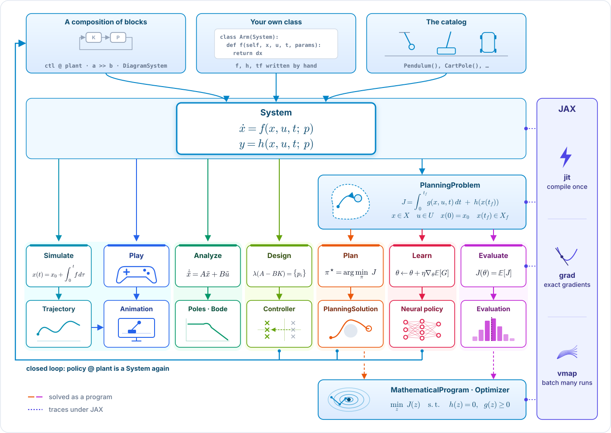
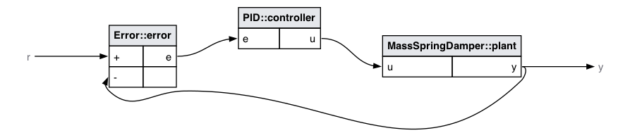

Write the equations once.
Simulate, analyze, control, plan, optimize, learn.
A unified Python framework for dynamical systems and control. One differentiable backbone connecting classical frequency design, trajectory optimization, and GPU-accelerated learning.
.slx files, per-seat licenses, no autodiff
self.System leaf.
.slx files with pure, version-controlled Python expressions.C >> G (series), A + B (parallel), C @ G (feedback), sys % Δ ($ZOH$ digital clock sampling).diag.connect(src, port, dst, port) and disconnect() wire arbitrary multi-loop networks with immediate port checks.bode(), nyquist(), root_locus(), linearize(), and state-space kalman().plant.game() drives plants with keyboard/gamepad (via pygame), or paces hardware-in-the-loop testbeds in real-time.backend="jax") for advanced research.vmap.MathematicalProgram.gd, adam, l-bfgs (JAX)
SLSQP), Ipopt (interior-point)
NeuralPolicy / MLP) is a standard System: loop = policy @ plant.compare() function evaluates open-loop trajectories, state-feedback, and neural policies on the identical task.| Capability | Minilink | MATLAB / Simulink | Python-Control | CasADi | Gymnasium / SB3 |
|---|---|---|---|---|---|
| Classical Control | Yes (Built-in) | Yes (Control Toolbox) | Yes | No | No |
| Optimal Control & Planning | Yes (DP, TrajOpt, MPPI) | Separate add-ons | No | Yes (NLP solver) | No |
| Autodiff & GPU Rollouts | Native JAX (jit, vmap) |
Limited (GPU Coder) | No | CPU AD | PyTorch / JAX tensors |
| Model Syntax & Workflows | Pure Python / Git-native | Proprietary binary .slx |
Pure Python | Symbolic graph (SX/MX) | Step loop |
| License & Distribution | Open Source (MIT) | Proprietary (Commercial) | Open Source (BSD) | Open Source (LGPL) | Open Source (MIT) |
% operator), but continuous physics is the foundation>>, +, @, %) replaces binary .slx block diagrams with clean, reviewable PR diffs.vmap, and exact plant-controller co-design ($\nabla_\theta J$).MathematicalProgram and PlanningProblem interfaces decouple problems from plug-and-play gradient, NLP, and RL solvers.jax.shard_map, SPMD).